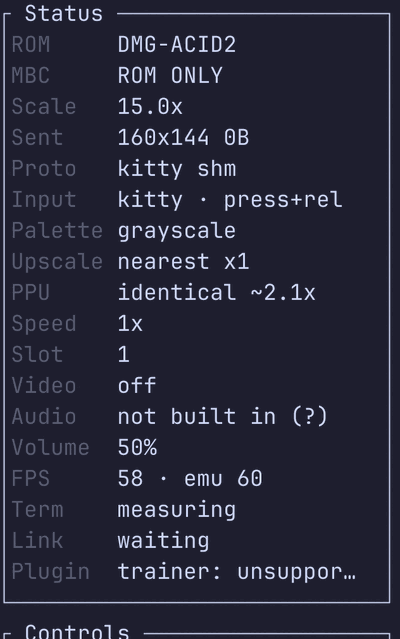

Standing page · TerminalGB
Performance, and what it buys.
How fast TerminalGB runs, and what accuracy costs. Every figure carries the core, the picture engine and the load average it was taken on, because on this box the same binary reads 56% apart between a quiet machine and a busy one.
The headline, with its conditions
Pokémon Blue from a real in-game save state, one worker, pinned to a P-core, thread CPU clock. The DMG's own frame is 16.7427 ms, so 1× real time is 59.7275 frames a second.
One core, five configurations
The number changes by an order of magnitude depending on what is switched on
| Configuration | ms/frame | × real time | Load |
|---|---|---|---|
| Collector — pixels off, APU installed, samples off | 0.0454 | 369× | 1.3 |
| The same, no APU installed at all | 0.0405 | 414× | 1.3 |
| The same, on a busy box | 0.0772 | 217× | 16 |
| Player — picture on, APU silent | 0.1582 | 106× | 16 |
identical picture engine, picture on | 0.4962 | 34× | 16 |
Rows one and three are the same binary. The entire difference between 369× and 217× is the box's other occupant, reaching the measurement through frequency scaling. That is why every row above states its load average, and why a figure quoted without one should be distrusted.
core_bench example: 20,000 frames,
3,000 warm-up, three repeats, pinned with taskset.
And with the speed flags on
Documented shortcuts, each behind a named switch, off by default
Everything above is the accurate machine — every peripheral on its exact cycle. A run that is driving the machine rather than judging it can take liberties, and each one is a named flag rather than a silent mode:
| Mode | ms/frame | × real time | Over accurate |
|---|---|---|---|
| Accurate | 0.0555–0.0557 | 300× | — |
speed | 0.0510–0.0511 | 328× | +9.2% |
speed,no-apu-state | 0.0395–0.0397 | 423× | +40.8% |
Read these as ratios against the accurate row measured in the same session, not against the table above it — that is a different save state, and comparing across sessions on this box is worth nothing. One P-core, load 0.84, three interleaved rounds.
Against the field, same session
One machine, one core, one cartridge, one frame count, one clock — and nobody's marketing number. Every side built with its own release configuration and its rendering and sound switched off, because that is how a headless campaign runs.
Where the remaining gap is
It is entirely the core
Costed by turning each part on and off on both sides in the same session:
| Component | PyBoy | Ours |
|---|---|---|
| Core only | 0.0198–0.0298 | 0.0672 |
| The renderer, on top | +0.0374 | +0.0434 |
| The APU, silent | — | +0.0034 |
| The APU, producing samples | +0.0255 | +0.0400 |
Our renderer is within 16% of theirs, and our APU is an order of magnitude cheaper when silent — which is the configuration a collector actually runs in. The whole difference is peripheral bookkeeping happening once per instruction here and once per horizon there.
The claim that did not hold
43×, not 1,000×
The figure in circulation is that a fast Game Boy interpreter reaches
1,000–10,000× real time. On this hardware, with this method, the
reference cycle-accurate emulator reaches 43× — and it is not a slow
implementation. It is written in C, compiled with -ffast-math and
LTO, and it is the accuracy oracle this project uses to settle disputes.
Some arithmetic for why: 1,000× is 16.7 µs for 70,224 emulated T-cycles — about one host clock per Game Boy T-cycle. 10,000× would be a tenth of a host clock per T-cycle, which is not an interpreter at all.
There is no technique to copy from SameBoy here, because we are already ahead of it. That is not a boast; it is what closed the question.
What twenty cores do
The unit that matters to a measurement campaign is not ms/frame — it is how many measurements fit in a day.
| Workers | Frames/s | × real time | Per instance |
|---|---|---|---|
| 1 | 16,590 | 278× | 0.0602 ms |
| 4 | 63,687 | 1,066× | 0.0624 ms |
| 8 | 126,633 | 2,120× | 0.0627 ms |
| 12 | 153,455 | 2,569× | 0.0679 ms |
| 16 | 197,543 | 3,307× | 0.0727 ms |
| 20 | 223,073 | 3,735× | 0.0770 ms |
Four cores are already past 1,000×. The per-instance figure rises only 28% from one worker to twenty, which is what silicon-limited rather than contention-limited looks like on a box with 8 P-cores and 12 E-cores.
Two different 1,000× targets, and they are not the same work
Aggregate 1,000× is already met, on four cores. Single-core 1,000× is about 3× away and is not available by shaving: pricing the per-access bus tick at +21% of a collector's frame, the whole APU at +16.7% and the whole timer at +14%, deleting all three outright — which would not be an emulator any more — is about 1.9×, roughly 550×. Everything else is a few per cent each. It needs a different execution model, not another optimisation pass. When somebody quotes a throughput figure for this emulator, they should say which one they mean.
Two picture engines, and what exactness costs
Not a quality setting and not an appearance setting. On ordinary games the two produce byte-identical framebuffers; the only axis between them is exactness against speed.
The standard engine draws a whole scanline in one step at the end of
mode 3, from whatever the registers hold at that instant. The
identical engine walks the real hardware pixel pipeline dot by dot —
the background fetcher, the eight-pixel FIFO, sprite fetches, the window restart,
the SCX & 7 discard. Only the second can represent "the wrong
tile source for one dot in the middle of a line", which is why only the second
can catch that.

identical, what it
is costing right now. P switches between the two without a pause or
a reload — both engines share every register and the framebuffer, and
identical rebuilds its pipeline at the head of the next scanline.
| Reference suite | standard |
identical |
|---|---|---|
| Mooneye GB (acceptance + emulator-only) | 95 / 103 | 103 / 103 |
| Mealybug Tearoom, pixel-exact rows | 3 / 79 | 29 / 79 |
| Gambatte | 3,176 / 5,320 | 3,622 / 5,320 |
| GBMicrotest | 252 / 513 | 339 / 513 |
| AGE | 3 / 59 | 11 / 59 |
| Mooneye (wilbertpol) | 62 / 122 | 82 / 122 |
| Scribbltests | 7 / 13 | 9 / 13 |
| Frame cost, Pokémon Blue, picture on, one P-core | 0.094 ms | 0.373 ms |
The accurate engine costs four times as much per frame and is still
only 2.2% of a frame's 16.7 ms budget on a desktop core. That is cheap enough to
be the default, and it is. It is not free everywhere: on the PSP frontend the
emulator pins standard, because an exact picture nobody can play is
worth nothing.
The method, and three ways of getting it wrong
Four things about the benchmark command are load-bearing, and three of them were learned by producing a wrong answer first.
One
Pin it
8 P-cores at 5.3 GHz, 12 E-cores at 4.6 GHz. A fresh process lands on whichever the scheduler picks, so the per-instance figure moves by 15% or more between invocations of the identical binary — even though it is CPU time.
Two
Report the load average
The benchmark reports thread CPU time and prints the wall figure beside it so the gap is visible. Contention still reaches it through frequency scaling: the same binary measured 0.0581 ms/frame at load 0.3 and 0.0909 at load 16 — a 56% spread, on the same code.
Three
Use long rounds
2,000-frame rounds are mostly the frequency governor ramping up after process start, and they reorder the variants between runs — which looks exactly like a real difference between them.
Four
Know which tool you reached for
The obvious "the core stands alone" demo reads 90× rather than 288×, and that is correct: it renders every pixel, hashes the whole framebuffer, round-trips a save state and runs 60 more frames to check it. It is not a throughput benchmark and does not claim to be.
The gaps
Each remaining red row has a named reason, and one of them must stay red forever.
- Mid-scanline picture timing is the ceiling. Most of the Mealybug Tearoom suite is red even on the exact engine. 45 of its 79 rows cannot be won by picture work at all: 27 need Nintendo's boot ROM in video RAM, 8 compare a greyscale render against a colour reference, and 7 are a ROM-versus-reference mismatch inside the suite. The honest denominator is 34.
- Nine Mooneye rows are other consoles — machine variants deliberately not emulated, pinned as failures on purpose rather than removed from the denominator.
- One test must stay red. A Color memory-corruption defect does not exist in Color silicon, so real hardware fails that ROM too. Passing it would be the bug.
- Mealybug's score is not a pixel count. That suite compares by shade-rank distance, which is deliberately unforgiving — a frame introducing one extra distinct shade can report on the order of a whole screen "wrong" regardless of how much of it is perfect. Those figures are treated as an ordering signal, never converted into a percentage.
- Single-core 1,000× is not reachable by optimisation. Named above with the arithmetic: deleting the bus tick, the APU and the timer entirely gets to roughly 550×, and would not be an emulator.
- The three-emulator comparison was run on the fast engine. That is the fair comparator against two emulators with their rendering off. A bare run of the same command today uses the exact engine and reads about four times slower — a different measurement, not a regression.
Where these numbers come from. Every throughput figure was produced
by the project's own core_bench example on one machine, pinned to a
named core class, reporting thread CPU time, with the load average recorded beside
it. The three-emulator comparison was run in a single session with every side built
in its own release configuration and its rendering and sound off.
The accuracy table is read from the repository's checked-in conformance baselines, which are the expectations themselves, so a count and a claim cannot drift apart. There is no overall percentage accuracy figure here and no comparison against anybody's published marketing number.
The bug that made the exact engine worth its cost has its own write-up: the double-speed bug that cost 2,304 pixels. The rest of the project is on the TerminalGB project page.
← Back to devlog